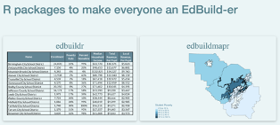

Working with tidy education finance data
2026-03-18
Bellwether envisions a future where all young people have access to an excellent education, and live lives filled with opportunity.
Bellwether is a national nonprofit that works hand in hand with education leaders and organizations to accelerate their impact, inform and influence policy and program design, and share what we learn along the way.
Education finance sets the foundation for what is possible in every school in the country. Education finance equity is essential to leveling the playing field for marginalized students in under-resourced schools and communities.
Bellwether’s work in state education finance equity aims to improve funding systems, state by state, through:
The Annual Survey of School System Finances (F-33) is administered by the U.S. Census Bureau on behalf of NCES.
Sounds great! So what’s the catch?
Census version issues:
NCES version: long release lag time
Analyst judgment calls everywhere:
edbuildr and edbuildmapr – early effort to make F-33 data accessible in R
An R package for tidy education finance data. Hosted on CRAN:
Two core functions:
get_finance_data() – pull cleaned F-33 data by state and yearlist_variables() – explore available variables in skinny and full datasetsBundles additional data beyond F-33:
get_finance_data()The main function you’ll use today:
| Skinny | Full | |
|---|---|---|
| Variables | 41 vars | 89 vars |
| Best for | Quick analysis, per-pupil comparisons | Deep dives, expenditure breakdowns |
| Speed | Fast | Larger download |
In February, we used "skinny". Today we’ll also use "full" to access expenditure categories.
| Variable | Description |
|---|---|
rev_total_pp |
Total revenue per pupil |
rev_local_pp |
Local revenue per pupil |
rev_state_pp |
State revenue per pupil |
rev_fed_pp |
Federal revenue per pupil |
exp_total_pp |
Total expenditure per pupil |
enrollment |
Fall enrollment |
In the hackathon, you:
Today, we’ll:
edfinr Workshop | AEFP26 | Bellwether